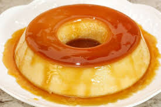
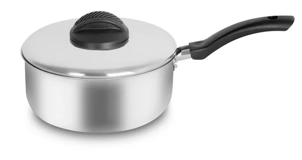
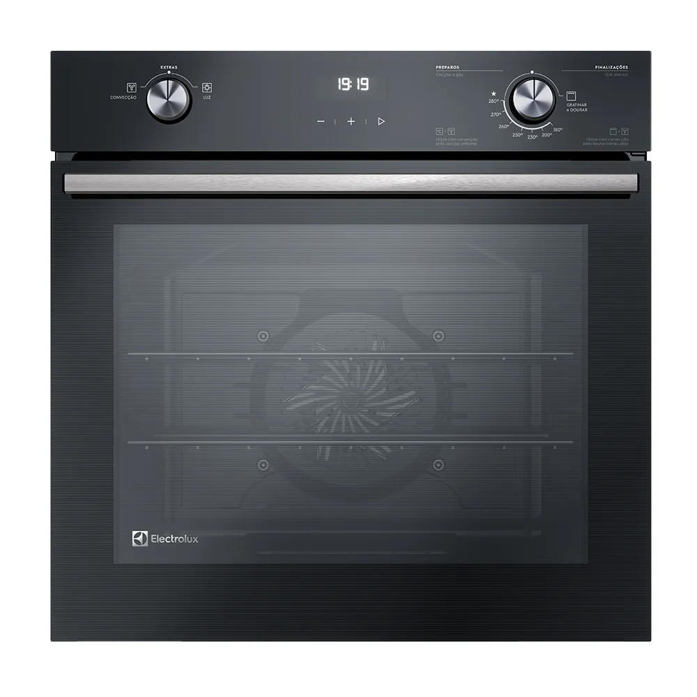
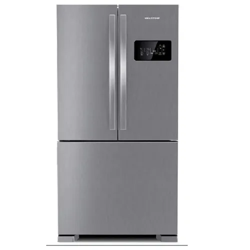

Vamos aprender a fazer uma receita deliciosa?

Ingrediente
Calda
1 xicara(chá) de açucar
Pudim
1 caixa de leite condensado (de sua preferencia) 395 g
2 medidas de um copo de leite ninho
3 ovos
Utensílios Necessários
Imagem do utensílio Panela
Panela

Forno

Liquidificador

Geladeira

Modo de preparo
Calda
1 Em uma panela de fundo largo, derreta o açúcar até ficar dourado
 2 Junte a água quente e mexa com uma colher. Deixe ferver até dissolver os torrões de açúcar e a calda engrossar.
2 Junte a água quente e mexa com uma colher. Deixe ferver até dissolver os torrões de açúcar e a calda engrossar.
 3 Forre com a calda uma forma com furo central (19 cm de diâmetro) e reserve.
3 Forre com a calda uma forma com furo central (19 cm de diâmetro) e reserve.
 4 Em um liquidificador, acrescente o Leite Condensado, o leite NINHO e os ovos. Bata até obter uma consistência homogênea e despeje na forma reservada.
4 Em um liquidificador, acrescente o Leite Condensado, o leite NINHO e os ovos. Bata até obter uma consistência homogênea e despeje na forma reservada.
 5 Cubra com papel-alumínio e leve ao forno médio (180°C), em banho-maria, por cerca de 1 hora e 30 minutos.
5 Cubra com papel-alumínio e leve ao forno médio (180°C), em banho-maria, por cerca de 1 hora e 30 minutos.
 6 Depois de frio, leve o pudim de leite condensado para gelar por cerca de 6 horas. Desenforme e sirva a seguir.
6 Depois de frio, leve o pudim de leite condensado para gelar por cerca de 6 horas. Desenforme e sirva a seguir.
kkkkkkkkkk